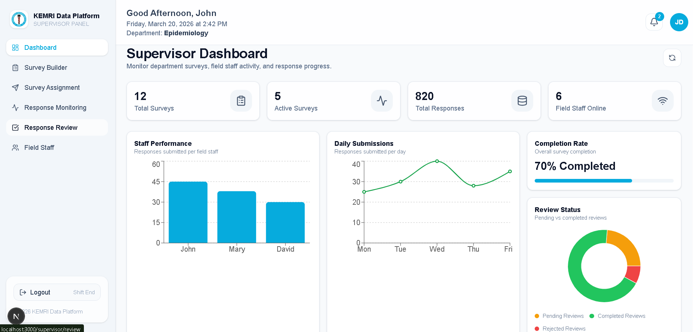
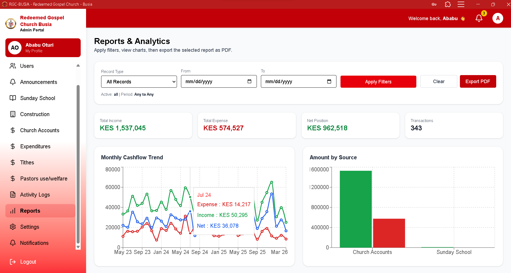
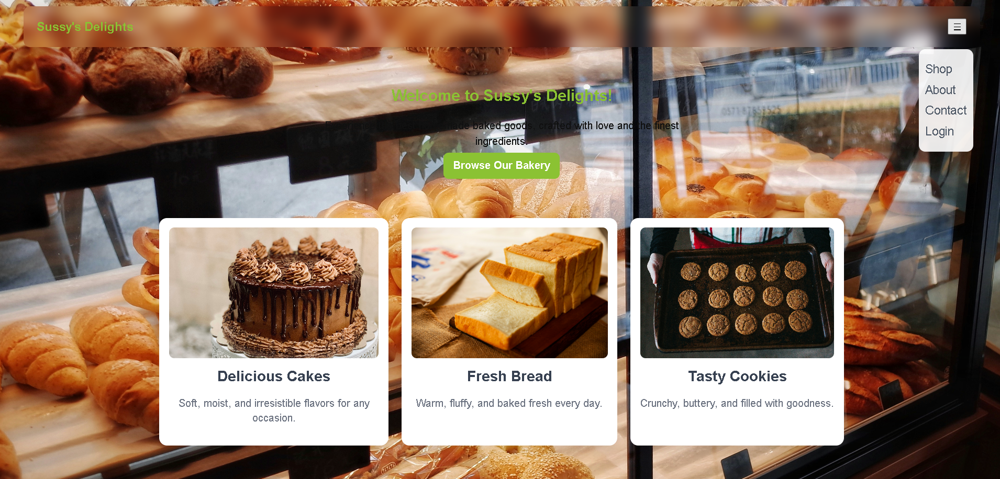
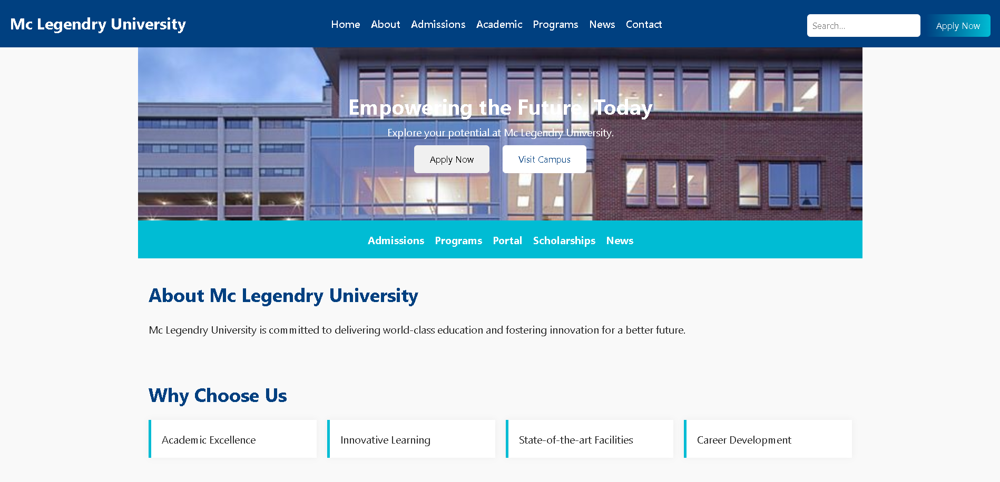
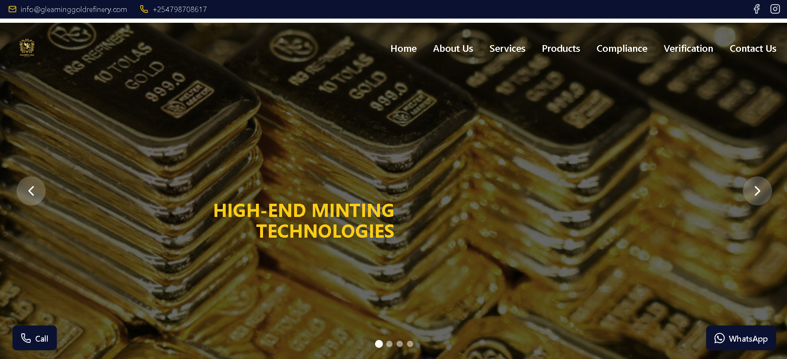
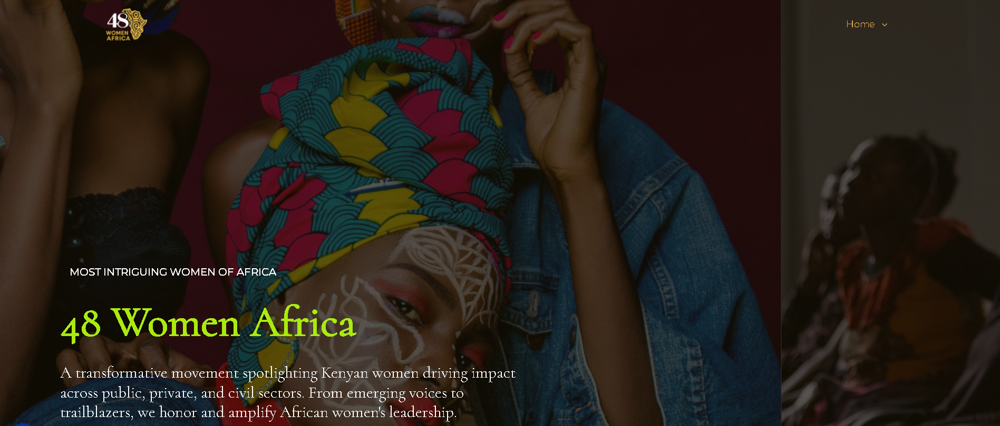
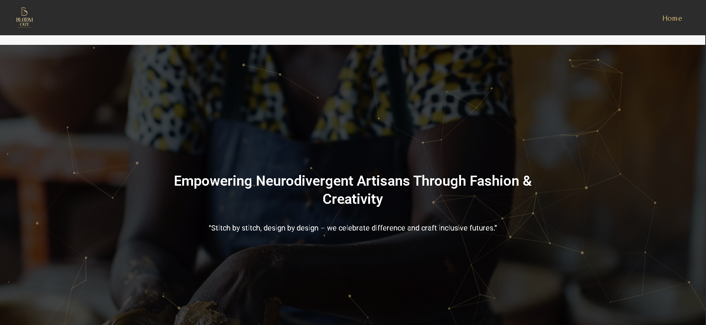
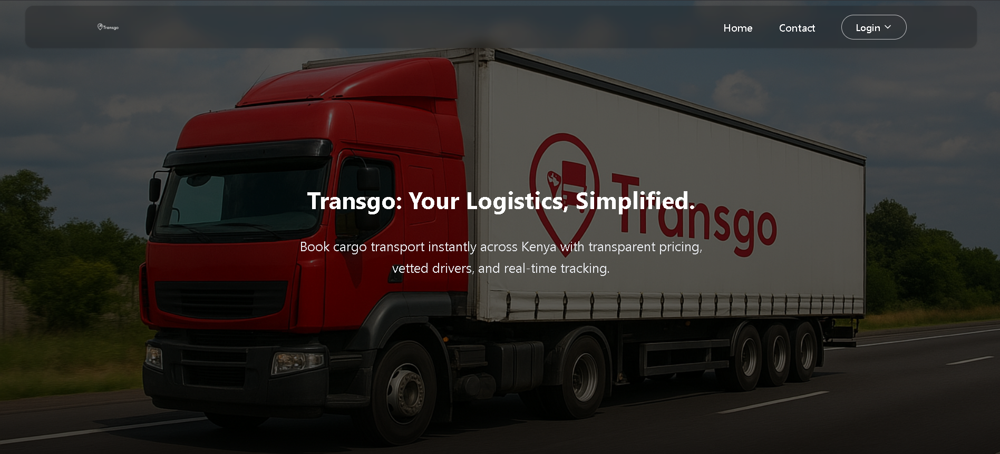
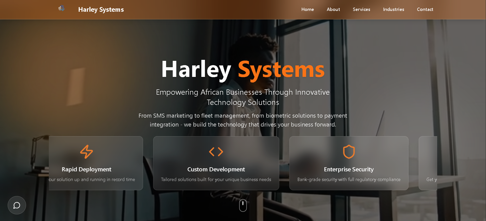

My Projects
Explore categorized work that reflects my skills and problem-solving experience:

Kemri Data Platform
In Progress – 30%
Currently developing a full-stack data collection and analytics platform, using the Kenya Medical Research Institute as a reference model, to support field research across departments such as Malaria, HIV, TB, and Influenza. The system features dynamic survey creation, role-based access control, and an offline-first mobile workflow for efficient field data capture. It is designed with a strong focus on scalability, security, and efficient management of research data.
Tech Stack: Supabase | Next.js | Tailwind CSS

Robotech Solution EMS
A scalable role-based Enterprise Management System (EMS) built as a SaaS platform to help organizations efficiently manage employees, departments, attendance, and HR workflows from a centralized dashboard. It improves operational visibility, automates administrative processes, and provides secure, data-driven workforce management for organizations of any size wih 100% efficiency.
Tech Stack: Supabase | HTML | CSS | JavaScript

Redeemed Gospel Church Busia MS
A SaaS based Church Management System (ChMS) designed to digitize staff and member records, streamline administrative processes, and enhance data security through role based access control reducing manual record keeping by up to 90%, significantly improving data accuracy, operational efficiency, and real time organizational visibility.
Tech Stack: MongoDB | Next.js | Tailwind CSS

Sussy's Delights
An online bakery marketplace
Tech Stack: MongoDB | Next.js

Mc Legendry University
A modern, responsive university website designed to streamline access to academic information, admissions, and campus services. It enhances the digital presence of the institution while improving user experience for students, staff, and prospective applicants.
Tech Stack: HTML | CSS| JavaScript

Gleaming Gold Refinery
Gleaming Gold Refineries Website is a responsive company website developed to showcase gold refinery services and strengthen customer engagement through a professional digital presence. The website allows visitors to explore refinery services, view refined gold products, and submit inquiries through an intuitive and user-friendly interface. The project emphasizes responsive design, clear service presentation, and modern web performance to enhance trust and accessibility for clients and investors.
Tech Stack: Next.js | Tailwind CSS

48 Women Africa
48 Women Africa – Kenyan Chapter is a bold initiative celebrating impactful women leaders across Kenya through mentorship, advocacy, and storytelling. The site reflects this mission with a modern, yellow-and-black design focused on engagement and empowerment.
Tech Stack: Wordpress | cPanel

Bloom Out
I designed and developed a modern, responsive website for Bloom Out, a social enterprise focused on empowering neurodivergent individuals through fashion and artisan skills. The platform highlights handcrafted products, inclusive training programs, and advocacy for neurodiversity in the creative industry.
Tech Stack: Wordpress | cPanel

Logistics System
Developed a logistics and transportation web platform designed to streamline access to cargo and supply chain services through a modern digital interface. The system enables users to explore transportation solutions, understand logistics capabilities, and initiate service inquiries. Built using modern web technologies and deployed on cloud infrastructure, the platform focuses on usability, scalability, and efficient service presentation for logistics operations.
Tech Stack: Next.js | Tailwind CSS

Harley System
Harley System is a responsive company website developed to establish a professional digital presence and enhance customer engagement. The website allows visitors to explore company services, learn about the organization, and easily connect through inquiry and contact features. The platform focuses on clean UI design, responsive layouts, and optimized performance to deliver a modern and accessible user experience across devices.
Tech Stack: Next.js | Tailwind CSS